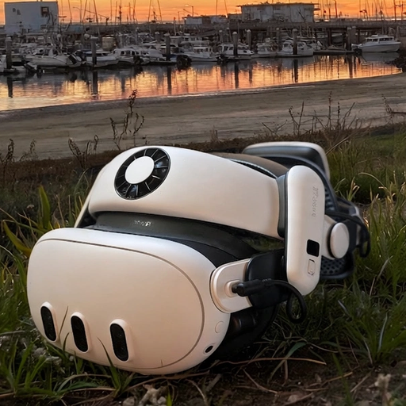

Getting started
Install the app, add your first drive, and set up reconnect and portable mode.

OceanSideVRYour cloud storage, as a drive letter.
CloudDrive Mount turns remote storage into ordinary Windows drives. Connect an SFTP server, an FTP site, a WebDAV share, your Google Drive, or a Cloudflare R2 bucket, and it shows up in Explorer as W:, X:, or whatever letter you pick — read and write, just like a local disk.
It runs in the system tray, reconnects your drives when Windows starts, and works through Cloudflare tunnels, so your servers stay reachable without opening ports. No account, no cloud service of its own — your files go straight from your computer to your storage.
Open source · GPL-3.0
cloudflared access tcp) or Cloudflare Access service-token headers, supervised by the app.CloudDriveMount.exe, no installer. Settings can live next to the executable.CloudDriveMount-win-x64.zip from GitHub Releases, extract it, and run CloudDriveMount.exe. WinFsp is bundled and installed automatically if it’s missing.Google Drive needs no setup — just add a Google Drive drive and sign in. Google Docs, Sheets, and Slides show up as shortcuts that open in your browser.
When you sign in, Google shows an “unverified app” warning. That’s expected — this app isn’t verified by Google. Click Advanced, then Go to continue.
Full setup steps are in the Google Drive docs.
Install the app, add your first drive, and set up reconnect and portable mode.
What each storage provider needs: SFTP, FTP/FTPS, WebDAV, Google Drive, and Cloudflare R2.
Sign in, scopes, and what the unverified-app warning means.
Tunnels, Access service tokens, Local Disk modes, and sharing a drive on your LAN.
WinFsp, sign-in timeouts, stale mounts, and where the app keeps its files.
CloudDrive Mount has no telemetry, no analytics, and no account. Your credentials are encrypted on your device with Windows DPAPI, and your files go only to the storage you configure.